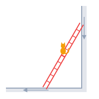

catDraw = {
const theta = catAngle(catSlide)
const cat = catPosition(catT, catSlide)
// The path so far, and the rest of it, faintly.
const steps = 200
const pastX = [], pastY = [], restX = [], restY = []
for (let k = 0; k <= steps; k++) {
const s = k / steps
const p = catPosition(catT, s)
if (s <= catSlide) {
pastX.push(p.x)
pastY.push(p.y)
}
if (s >= catSlide) {
restX.push(p.x)
restY.push(p.y)
}
}
pastX.push(cat.x)
pastY.push(cat.y)
restX.unshift(cat.x)
restY.unshift(cat.y)
// The whole ellipse the arc belongs to; the ladder only ever sweeps the
// quarter in the second quadrant.
const a = (1 - catT) * catL
const b = catT * catL
const ellipseX = [], ellipseY = []
for (let k = 0; k <= 400; k++) {
const phi = 2 * Math.PI * k / 400
ellipseX.push(a * Math.cos(phi))
ellipseY.push(b * Math.sin(phi))
}
const data = wallAndFloor()
if (catFull) {
data.push(scatter({x: ellipseX, y: ellipseY, line: {color: chartColors.muted, width: 1.5, dash: "dash"}}))
} else if (catShow) {
// The full curve already covers the rest of the quarter.
data.push(scatter({x: restX, y: restY, line: {color: VM.plotting.alpha("fn", 0.35), width: 1.5, dash: "dot"}}))
}
if (catShow) {
data.push(scatter({x: pastX, y: pastY, line: {color: chartColors.fn, width: 3}}))
}
data.push(ladderTrace(theta))
data.push(catMarker(cat))
// With the full curve on, zoom out to one fixed view, as Full astroid
// does in the envelope app: enough for the middle rung's whole circle
// (radius L/2). It doesn't depend on Cat's height, so no slider rescales
// the axes; longer ellipses run off the chart, there to zoom out to.
let layout = catLayout
if (catFull) {
layout = {
...catLayout,
xaxis: {...catLayout.xaxis, range: [-1.15, 0.65]},
yaxis: {...catLayout.yaxis, range: [-0.65, 1.15]},
uirevision: "full"
}
}
return catPlot(data, layout)
}Cats on Ladders
Math Art
Visual Proof
Geometry
Parametric Curves
Knock over a ladder with a cat on it, purely in the name of geometry.
Memory works in weird ways. I was working on a project on Gaussian Periods and we were discussing hypocycloids, which I hadn’t thought about in a long time. Thinking about them brought back fond memories of a puzzle about a cat on a ladder, one that turns out to be secretly about them.
The puzzle
A ladder leans against a wall, and a cat is sitting on its middle rung. The ladder starts to slide, its top down the wall and its foot along the floor, until it lies flat. What path does the cat trace as it rides the ladder down?

It took some creative googling to track down its source: Straight Lines and Curves by N. Vasilyev and V. Gutenmacher, published by Mir.
Make a guess before reading on, then try the app, and click Path in the legend when you are ready to check.
On the middle rung, the cat traces a quarter circle of radius \(L/2\) centered at the corner where the wall meets the floor, where \(L\) is the length of the ladder. Anywhere else on the ladder, the path is a quarter of an ellipse; click Full curve in the legend to see the whole ellipse.
TipExercise
Why do you get a circle when the cat is at the midpoint of the ladder? There’s a simple geometric proof of this. All you need to show is that the distance of the cat from the corner where the wall meets the floor does not change. Try to prove it yourself.
Circles inside circles
There’s a more fun proof that the middle rung traces a circle, using rolling circles. Roll a circle of radius \(L/2\) inside a circle of radius \(L\). This pair is called the Tusi couple, and it has a surprising property: every point on the small circle moves back and forth along a straight line, a diameter of the big circle (try it in Spirographs). It follows that if you track two diametrically opposite points on the smaller circle, they’ll trace the wall and the floor, and the diameter connecting them will be the ladder.
Now it is easy to see that when the cat is sitting at the midpoint of the ladder, it is tracking the center of the smaller circle, which goes around in a circle of radius \(L/2\).
TipExercise
Why do you think changing the height of the cat changes the circle to an ellipse? Can you prove this using a simple geometric argument? Using rolling circles?
Enter hypocycloids
What does this have to do with hypocycloids? Forget the cat for a moment and watch the whole ladder. As it slides, it leaves a trail of its earlier positions behind. Those lines outline a curve that every position of the ladder just touches, called the envelope of the ladder. Click Envelope in the legend to see it: the curve is an astroid!
What makes this remarkable is that an astroid is a hypocycloid: the curve traced by a point on a circle rolling inside another circle with four times its radius. So as the ladder slides, it is always tangent to the path of a point on a rolling circle.
Circles inside circles inside circles
Rolling circles explain the envelope as well. Add a third circle, of radius \(L/4\), rolling inside the big circle along with the other two. It fits snugly inside the small one: both touch the big circle at the same point, and its diameter runs from that point to the middle of the ladder. A point on this little circle traces the astroid, and that point always lies on the ladder.
TipExercise
Can you prove that the point on the little circle always lies on the ladder, exactly where the ladder touches the astroid?
References
N. Vasilyev and V. Gutenmacher, Straight Lines and Curves, Mir Publishers, 1980. mirtitles.org